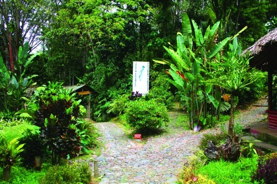
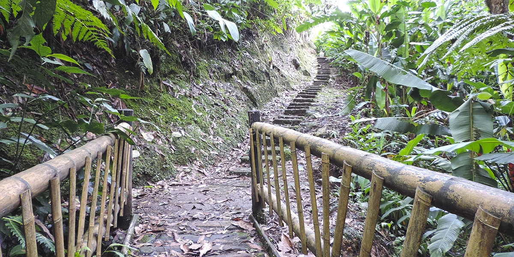
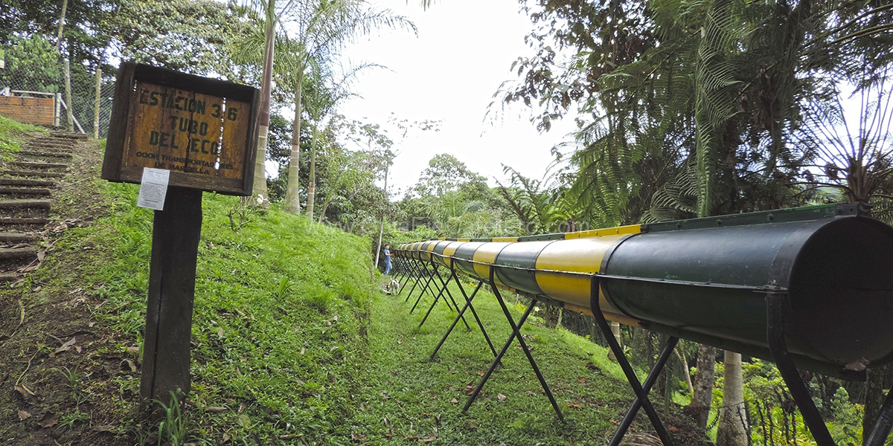

Jardín Botánico de Marsella
Marsella, Risaralda




Descripción
El Jardín Botánico de Marsella es un espacio natural dedicado a la conservación de la flora local y la educación ambiental. Ofrece senderos ecológicos, una rica colección de plantas nativas y es un importante centro de investigación botánica en la región.
Características
- 🌿 Colección botánica
- 🦜 Avistamiento de aves
- 🚶♂️ Senderos interpretativos
- 🎓 Centro educativo
- 🌺 Flora nativa
- 📸 Puntos fotográficos
- 🦋 Mariposario
Horarios y Precios
Horario:
8:00 AM - 5:00 PM
Días:
Martes a Domingo
Entrada:
$5.000 COP
Restaurantes cercanos
-
La Estancia
- Comida colombiana y sudamericana
- Ambiente acogedor y familiar
-
La Molienda Café Bar
- Cafés especiales
- Repostería artesanal
- Ambiente tranquilo
-
Milkshake
- Batidos especiales
- Comida callejera
- Ambiente juvenil y moderno
-
Café Don Danilo
- Café de origen local
- Productos de panadería
- Ambiente tradicional
-
Rayuela
- Gastronomía innovadora
- Experiencias culinarias únicas
Alojamientos cercanos
-
Eco Hotel Los Lagos
- A 50 minutos de Pereira
- Entorno natural y tranquilo
- Excelente atención y gastronomía
-
Hotel Carmen
- Ubicación: Centro de Marsella
- Cerca de la Casa de la Cultura
- Ambiente luminoso y acogedor
-
Casa Finca Lucitania
- Ubicación: Vereda Valencia
- Ambiente campestre
- Cerca del centro de Marsella
-
La Victoria Villa
- Cerca de la Casa de la Cultura
- Vistas al jardín
- Comodidades modernas
-
Finca Lusitania
- Ubicación: Vía Marsella - Alto Cauca
- A 3 km del centro
- Experiencia rural auténtica